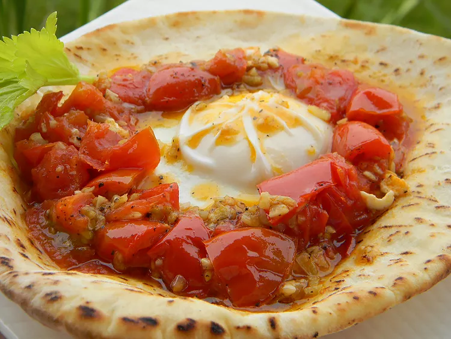

Shakshuka

Description
This shakshuka is an Arabic-style dish consisting of eggs, garlic, and tomatoes. My ex-husband, who is from Jordan, taught me this recipe. It's delicious!
Ingredients
- 1 tablespoon olive oil
- 5 large fresh tomatoes, coarsely chopped
- 1 tablespoon minced garlic
- 6 large eggs
- 4 pita bread rounds
- Heat olive oil in a large skillet over medium-high heat. Add chopped tomatoes and garlic, stirring occasionally, until liquid has cooked out of tomatoes. Carefully break eggs over tomatoes without breaking yolks. Lightly season with salt, reduce heat and cover.
- Simmer covered for 20 minutes, or until yolks are fully cooked. Adjust seasoning with salt as needed. Serve with pita bread.
Home